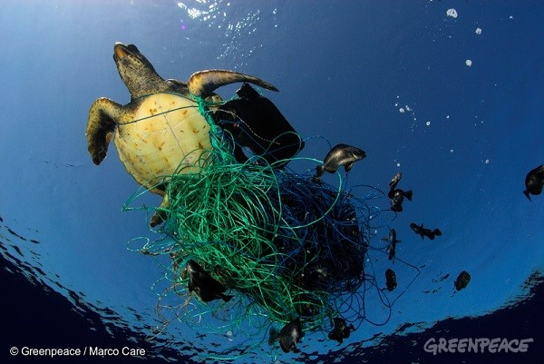

臺灣減塑時程獲國際讚許 持續淨灘助清淨海洋
六屆全球海洋廢棄物大會（IMDC）在今年三月於美國聖地牙哥完美落幕，臺灣的綠色和平、荒野保護協會和環保署今年都參與大會，與國際分享臺灣的減塑政策及決心。今年與會的國家與人數不僅是上一屆的 1.5 倍，會中各國代表公開交流經驗與政策措施的數量更是翻倍，顯見全球都卯足全力並集思廣益合力解決海洋廢棄物這個重大環境危機。不同於過去大多以美國為主導並偏向學術研討的情況，本屆增加了來自世界各地的官員、科學家、政策專家、NGO 與新創產業人士，多了更多實務面的政策推動與民眾參與的經驗分享。

海洋廢棄物，如廢棄漁具和其他非漁業來源的垃圾（像是貨櫃網跟塑膠包裝袋）都可能造成多種海洋生物因纏繞或誤食而死亡，包括海豹、海豹、海龜、海鳥與魚類等。
吸附微塑膠的海鮮能吃嗎？
本屆全球海洋廢棄物大會比起前一屆在科學研究上出現爆炸性的成長，尤其以微塑膠和微纖維的研究討論最為熱烈。當中也有以普羅大眾的立場提出：「我們到底能不能吃海鮮？」、「連瓶裝水也有微纖維，我們該怎麼辦？」等疑問，在場的科學家很謹慎地回答說，截至目前的研究，發現海鮮中有塑膠，生物體內也有微塑膠吸附的化學物質，證明微塑膠會隨食物鏈轉移，但還無法明確歸結對人體健康會有哪些風險，所以也沒辦法直接建議哪些海鮮不能吃。
粒狀或是片狀的微塑膠已經存在於臺灣海域，這些微塑膠容易與浮游生物聚集，導致常食用的魚類、貝類、蝦和生蠔等海洋生物誤食的機率大幅增加。
海岸監測與公民科學是次於微塑膠研究的第二熱門主題，各地研究機構將累積數年的資料帶進會場，討論共同建立全球監測系統和資料庫的可行性。此外，運用如衛星遙測、空拍機、水下攝影，結合具自動學習功能的辨視軟體等新科技來輔助監測海廢，也是目前積極發展中的監控技術。不過，許多研究和技術都還處於嘗試、討論修正錯誤的階段，尚未有能全面解決海廢問題的方法。
全球動員解決海洋垃圾危機
「科學不是孤單的，科學必須跟民眾的生活連結。」有生物學家背景的加拿大多倫多大學助理教授雀兒喜（Chelsea Rochman），活躍於各種政策制定會議，在大會的最後一天總結。於 2011 年舉辦的第五屆全球海洋廢棄物大會，集結眾多科學家建議後發展出檀香山策略（Honolulu Strategy），提出一個預防與管理海洋廢棄物的全球框架，全球因而依循檀香山策略，產出許多國際與區域層級的夥伴關係與計畫，旨在減少進入海洋的陸源垃圾，海漂垃圾以及海岸、底棲環境與遠洋水域裡累積的海洋廢棄物。海洋廢棄物議題也被納入聯合國永續發展目標，七大工業國亦發佈宣言，承諾將致力減少海洋廢棄物，之後各國也紛紛擬定行動方案，在世界各地以實際行動減緩海廢惡化。面對僅次於氣候變遷的全球災難——海洋廢棄物，沒有人能置身事外，每個人都是解決海廢的可能。
澎湖長期飽受海洋垃圾之擾，尤其在冬季，隨著東北季風而來的海漂垃圾累積在北岸，觸目驚心。
持續減塑淨灘有助清淨海洋。
教育、溝通與公民參與在各國行動方案以及各種政策制定裡都是不可或缺的部分。淨灘是現在公民最能直接參與清淨海洋的行動，也能親眼看見海洋備受污染實況，即使淨灘是末端手段，在等待更多的政策規範和科技能從源頭解決海廢之前，我們都還是必須持續不斷的淨灘。當我們了解拋棄式塑膠製品對海洋的傷害，便能從生活中改變依賴拋棄式塑膠製品的習慣，進一步支持禁用拋棄塑膠製品的法案。綠色和平的船艦「彩虹勇士號」去年底駛抵澎湖，號召在地學生、居民一起加入淨灘。